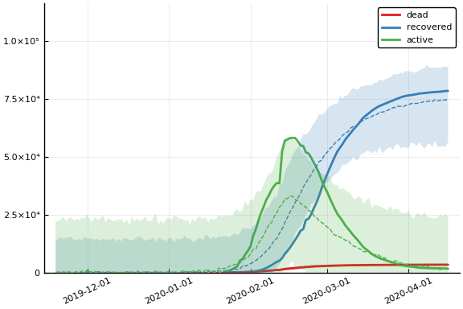
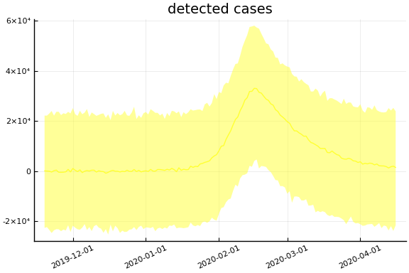
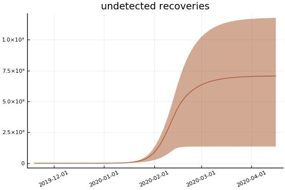
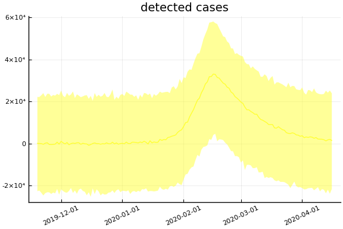
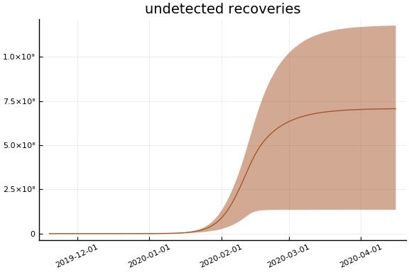
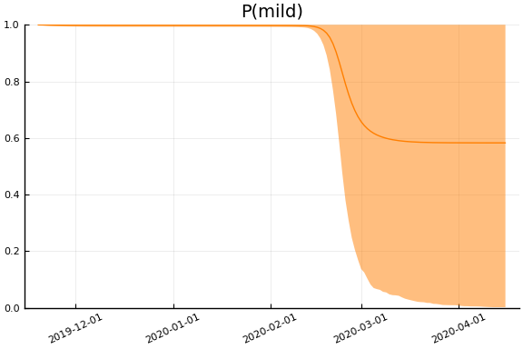
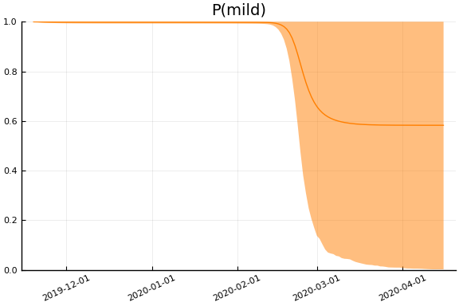

This work is licensed under a Creative Commons Attribution-ShareAlike 4.0 International License
using CovidSEIR, Plots, DataFrames, JLD2, StatsPlots
Plots.pyplot()
jmddir = normpath(joinpath(dirname(Base.find_package("CovidSEIR")),"..","docs","jmd"))
covdf = covidjhudata();
China¶
using Dates
dayt0 = Dates.Date("2020-01-22") - Dates.Day(1)
china = CountryData(covdf, "China", 1)
CountryData{Float64,Int64}(1.39273e9, [1, 2, 3, 4, 5, 6, 7, 8, 9, 10 … 64
, 65, 66, 67, 68, 69, 70, 71, 72, 73], [17.0, 18.0, 26.0, 42.0, 56.0, 82.0,
131.0, 133.0, 171.0, 213.0 … 3285.0, 3291.0, 3296.0, 3299.0, 3304.0, 330
8.0, 3309.0, 3316.0, 3322.0, 3326.0], [28.0, 30.0, 36.0, 39.0, 49.0, 58.0,
101.0, 120.0, 135.0, 214.0 … 73773.0, 74181.0, 74720.0, 75100.0, 75582.0,
75923.0, 76206.0, 76405.0, 76565.0, 76760.0], [503.0, 595.0, 858.0, 1325.0
, 1970.0, 2737.0, 5277.0, 5834.0, 7835.0, 9375.0 … 4603.0, 4310.0, 3881.0
, 3600.0, 3236.0, 2967.0, 2764.0, 2640.0, 2545.0, 2425.0])
using Turing
mdl = CovidSEIR.TimeVarying.countrymodel(china)
cc = Turing.psample(mdl, NUTS(0.65), 5000, 4)
import JLD2
JLD2.@save "$jmddir/china_$(Dates.today()).jld2" cc dayt0
JLD2.@load "$jmddir/china_tv_2020-04-03.jld2" cc dayt0;
cc = cc[:,:,1]
Object of type Chains, with data of type 4000×27×1 Array{Float64,3}
Iterations = 1:4000
Thinning interval = 1
Chains = 1
Samples per chain = 4000
internals = acceptance_rate, hamiltonian_energy, hamiltonian_energy
_error, is_accept, log_density, lp, max_hamiltonian_energy_error, n_steps,
nom_step_size, numerical_error, step_size, tree_depth
parameters = a, pE0, p[1], p[2], sigC, sigD, sigRc, β[1], β[2], β[3]
, γ[1], γ[2], ρ[1], ρ[2], τ
2-element Array{ChainDataFrame,1}
Summary Statistics
parameters mean std naive_se mcse ess r_hat
────────── ───────── ──────── ──────── ─────── ──────── ──────
a 0.4762 0.1125 0.0018 0.0073 256.5630 1.0020
pE0 0.0000 0.0000 0.0000 0.0000 230.1645 1.0081
p[1] 0.0930 0.0071 0.0001 0.0004 271.9785 1.0011
p[2] 0.0046 0.0004 0.0000 0.0000 270.3874 1.0004
sigC 2654.0677 304.9502 4.8217 13.3442 460.7165 1.0006
sigD 540.5723 48.0220 0.7593 1.8585 516.5709 0.9998
sigRc 3312.6131 378.8981 5.9909 19.2014 402.2769 1.0068
β[1] 0.1090 0.0973 0.0015 0.0069 204.6074 1.0066
β[2] 0.0005 0.0005 0.0000 0.0000 643.0540 0.9998
β[3] 2.0367 0.9693 0.0153 0.0588 271.6578 1.0058
γ[1] 0.0004 0.0004 0.0000 0.0000 908.4804 1.0001
γ[2] 0.0893 0.0066 0.0001 0.0004 270.6960 1.0006
ρ[1] 0.9791 0.0312 0.0005 0.0017 359.5796 1.0087
ρ[2] 23.0981 0.6907 0.0109 0.0406 330.7326 1.0023
τ 2.9659 1.1414 0.0180 0.0591 302.4217 1.0008
Quantiles
parameters 2.5% 25.0% 50.0% 75.0% 97.5%
────────── ───────── ───────── ───────── ───────── ─────────
a 0.3059 0.3999 0.4585 0.5295 0.7857
pE0 0.0000 0.0000 0.0000 0.0000 0.0000
p[1] 0.0804 0.0882 0.0925 0.0974 0.1085
p[2] 0.0040 0.0044 0.0046 0.0048 0.0054
sigC 2162.4566 2438.1695 2625.2616 2825.6502 3386.1569
sigD 459.0614 507.3368 535.6730 568.9067 644.4137
sigRc 2625.4344 3048.4072 3294.4249 3556.8522 4098.2755
β[1] 0.0012 0.0178 0.0762 0.2009 0.2914
β[2] 0.0000 0.0002 0.0004 0.0007 0.0019
β[3] 0.2316 1.2911 2.1268 2.7283 3.7503
γ[1] 0.0000 0.0001 0.0003 0.0006 0.0017
γ[2] 0.0776 0.0848 0.0887 0.0932 0.1035
ρ[1] 0.8814 0.9760 0.9915 0.9969 0.9998
ρ[2] 21.6331 22.6663 23.1264 23.5639 24.4635
τ 1.4465 2.1049 2.6838 3.6083 5.7400
Estimates¶
plot(cc)

describe(cc)
2-element Array{ChainDataFrame,1}
Summary Statistics
parameters mean std naive_se mcse ess r_hat
────────── ───────── ──────── ──────── ─────── ──────── ──────
a 0.4762 0.1125 0.0018 0.0073 256.5630 1.0020
pE0 0.0000 0.0000 0.0000 0.0000 230.1645 1.0081
p[1] 0.0930 0.0071 0.0001 0.0004 271.9785 1.0011
p[2] 0.0046 0.0004 0.0000 0.0000 270.3874 1.0004
sigC 2654.0677 304.9502 4.8217 13.3442 460.7165 1.0006
sigD 540.5723 48.0220 0.7593 1.8585 516.5709 0.9998
sigRc 3312.6131 378.8981 5.9909 19.2014 402.2769 1.0068
β[1] 0.1090 0.0973 0.0015 0.0069 204.6074 1.0066
β[2] 0.0005 0.0005 0.0000 0.0000 643.0540 0.9998
β[3] 2.0367 0.9693 0.0153 0.0588 271.6578 1.0058
γ[1] 0.0004 0.0004 0.0000 0.0000 908.4804 1.0001
γ[2] 0.0893 0.0066 0.0001 0.0004 270.6960 1.0006
ρ[1] 0.9791 0.0312 0.0005 0.0017 359.5796 1.0087
ρ[2] 23.0981 0.6907 0.0109 0.0406 330.7326 1.0023
τ 2.9659 1.1414 0.0180 0.0591 302.4217 1.0008
Quantiles
parameters 2.5% 25.0% 50.0% 75.0% 97.5%
────────── ───────── ───────── ───────── ───────── ─────────
a 0.3059 0.3999 0.4585 0.5295 0.7857
pE0 0.0000 0.0000 0.0000 0.0000 0.0000
p[1] 0.0804 0.0882 0.0925 0.0974 0.1085
p[2] 0.0040 0.0044 0.0046 0.0048 0.0054
sigC 2162.4566 2438.1695 2625.2616 2825.6502 3386.1569
sigD 459.0614 507.3368 535.6730 568.9067 644.4137
sigRc 2625.4344 3048.4072 3294.4249 3556.8522 4098.2755
β[1] 0.0012 0.0178 0.0762 0.2009 0.2914
β[2] 0.0000 0.0002 0.0004 0.0007 0.0019
β[3] 0.2316 1.2911 2.1268 2.7283 3.7503
γ[1] 0.0000 0.0001 0.0003 0.0006 0.0017
γ[2] 0.0776 0.0848 0.0887 0.0932 0.1035
ρ[1] 0.8814 0.9760 0.9915 0.9969 0.9998
ρ[2] 21.6331 22.6663 23.1264 23.5639 24.4635
τ 1.4465 2.1049 2.6838 3.6083 5.7400
Fit¶
sdf = simtrajectories(cc, china, 1:150)
f = plotvars(sdf, china, dayt0=dayt0)
plot(f.fit, xlim=nothing, ylim=(0, maximum(china.active)*2))

Implications¶
for fig in f.trajectories
display(plot(fig, xlim=nothing))
end


 


 


 
